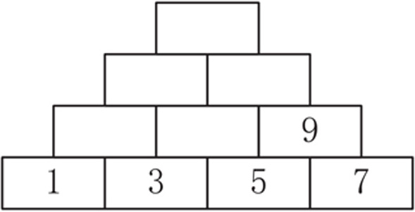
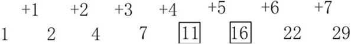

数字按照一定的规律进行排序就是数字排列。数字排列问题主要考查孩子对数字的敏感性以及运算的熟练程度。孩子要能够通过观察和运算，找出一系列数字之间的相互关系，找出数字排列的规律。通过数字排列训练，孩子能够对相邻数、单双数等概念更加熟悉，增强运算能力，在观察数字时更加敏锐。

典型例题 1 观察下面的每组数字，找出规律，在□里填上数字。
（1）1，2，3，4，5，□，7，8，9，10
（2）1，3，5，7，□，□，13，15，17，19
（3）2，4，6，8，□，□，14，16，18，20
（4）1，5，9，13，□，21，25
对于每组数，只要找到数字排列的相应规律，就很容易填出方框里的数字。
第1组数字后面的每个数字都比前一个数字多1，或者说前面的每个数字都比后面的一个数字少1，所以比5多1的数字是6。
第2组数字都是单数，后面的数字比前一个数字都多2，所以比7多2的数字是9，比9多2的数字是11。
第3组数字都是双数，后面的数字比前一个数字都多2，所以比8多2的数字是10，比10多2的数字是12。
第4组数字，后面的每个数字比前一个数字都多4，所以比13多4的数字是17。
典型例题 2 观察下面的每组数字，找出规律，在□里填上数字。
（1）1，2，3，2，5，□，□，2，9，2，11
（2）1，1，2，3，5，□，□，21
（3）1，2，4，7，□，□，22，29
第1组数字，第2个、第4个……双数位置的数字都一样，都是2，在单数位置的数字都是奇数，且后面的奇数比前一个奇数多2，所以方框里的数字依次是2和7。
第2组数字的规律是1+1=2，1+2=3，2+3=5，所以能够推出3+5=8，5+8=13，方框里依次是数字8和13。
第3组数字的规律如下图所示。

1.观察下面的每组数字，找出规律，在□里填上数字。
（1）17，16，15，14，□，□，11，10，9，8
（2）18，16，14，12，□，□，6，4，2
（3）19，17，15，13，□，□，7，5，3
2.观察下面的每组数字，找出规律，在□里填上数字。
（1）1，1，2，2，□，□，4，4，5，5
（2）1，2，4，5，7，8，10，□，□，14，16
（3）1，1，1，1，1，2，1，1，3，1，1，□，□，1，5
3.观察下面的每组数字，找出规律，在□里填上数字。
（1）12，8，10，8，□，□，6，8，4，8
（2）15，7，13，7，□，□，9，7，7，7
（3）19，20，17，18，□，□，13，14，11，12